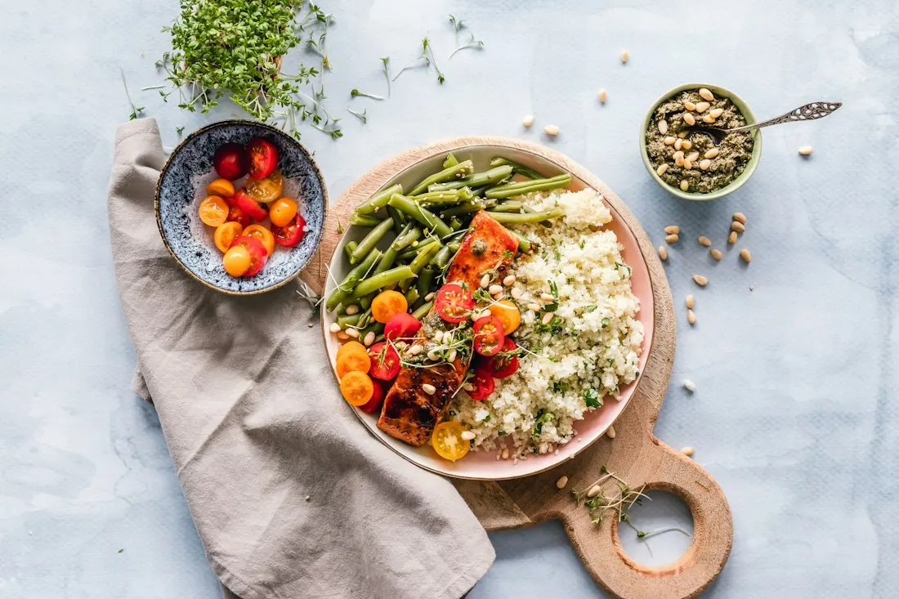

Bakt selleri
165Eple, hasselnøtt og brunet smør

For lange samtaler, små anledninger og kvelder du gjerne vil skal vare litt lenger.
Finn et bord ↗På Lun lar vi sesongen bestemme retningen. Vi serverer mat laget med omtanke, i rom som inviterer deg til å senke skuldrene og bli litt til.
Oppdag menyen ↗
En rolig lunsj, en middag med venner eller bare noe godt i glasset. Det finnes alltid en anledning til å møtes.
Planlegg besøket ↗Dette er et demonstrasjonsskjema. Ingen bestilling blir sendt.